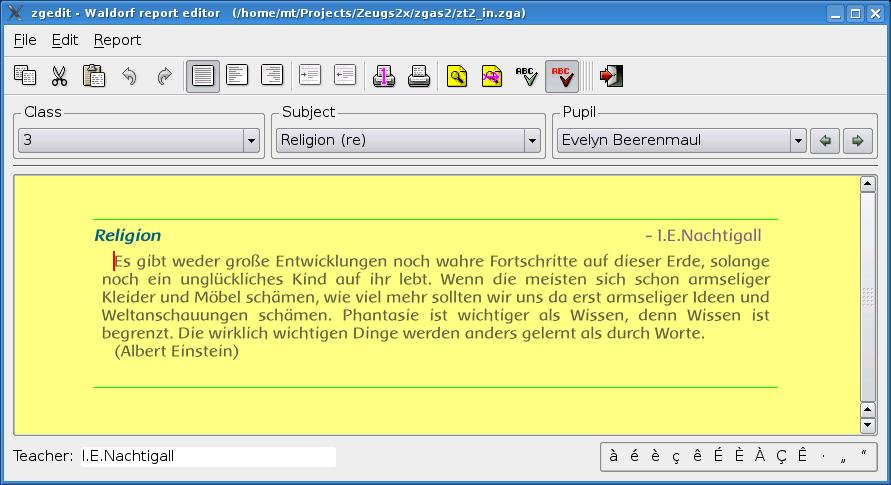
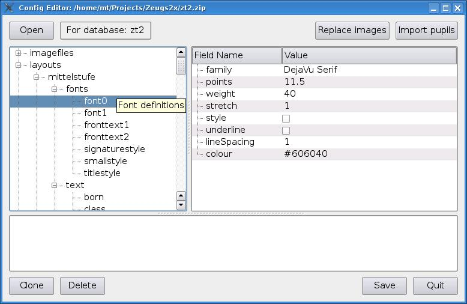

A suite of programs written in python/Qt4 as a system for the management of textual school reports (for pupils).
This suite of programs was written specifically to address the management of school reports in Waldorf (Rudolf Steiner) schools. The main characteristic, as far as the program is concerned, of these reports is that there is a significant text entry, no grade, for each subject. The aim was to make it as simple as possible for the teachers, many of whom will have little or no computer experience, to write their reports with the advantages that modern technology has to offer.
As it was written with German schools in mind, the user manual has been written in German, and there is (at present) no translation. Also the example data provided is in German. However, the code itself - meaning comments and messages, etc. - is in English, using gettext for translation.
Although the project itself has a very limited target group, it is possible that some of the code might be of use for other purposes, or at least as an example of how to use the libraries, etc. Apart from python and pyqt4, this project also makes use of sqlite, postgresql and enchant (spell-checker), via their python interfaces. All the user interfaces are built using qtdesigner, using a script to adapt its output for use with gettext. Also pyinstaller and nsis are used for making Windows packages. The software has been tested on GNU/Linux and Windows 2000.
Reports are presented individually on a class/subject/pupil basis. Each teacher's database file contains only the data (and hence the reports) for the teacher for whom it was generated.
Each teacher has an sqlite file with an extract of the main database. When school data updates are necessary, or finished reports need to be transferred to the main database, this is done using the synchronization application.

One or more pages of one or more complete reports may be printed. PDF output is also available.

To manage the main database there is a 'control panel'. It handles updates, backups, generation of teacher databases, generation of new main databases, etc.

Entering and maintaining the configuration data is probably the most complicated part of the system. To ease this burden slightly there is a dedicated editor which can also check the validity of the entries to a certain extent.
